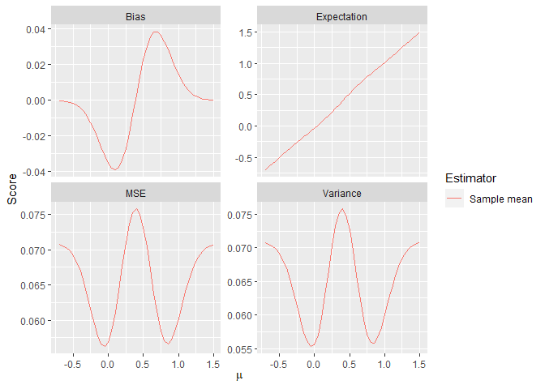

This package implements methods to evaluate the performance characteristics of various point and interval estimators for adaptive two-stage designs with prespecified sample-size recalculation rules. Further, it allows for evaluation of these estimators on real datasets, and it implements methods to calculate p-values.
Currently, it works for designs objects which were produced by the R-package adoptr, which calculates optimal design parameters adaptive two-stage designs.
Installation
You can install the development version of adestr by typing
remotes::install_github("https://github.com/jan-imbi/adestr")into your R console.
Information for reviewers
The scripts to reproduce the results from the paper can be found in the /data/code/ directory of this repository. The results themselves are located in the /data/ directory.
The easiest way to inspect the results is to clone this repository.
General example for usage of the package
Here is a quick example showing the capabilities of adestr. First, load adestr:
Then, you can evaluate the performance of an estimator like this:
evaluate_estimator(
score = MSE(),
estimator = SampleMean(),
data_distribution = Normal(two_armed = TRUE),
design = get_example_design(),
mu = c(0, 0.3, 0.6),
sigma = 1
)
#> Design: TwoStageDesign<n1=28;0.8<=x1<=2.3:n2=9-40>
#> Data Distribution: Normal<two-armed>
#> Estimator: Sample mean
#> Assumed sigma: 1
#> Assumed mu: 0.0 0.3 0.6
#> Results:
#> Expectation: -0.03523827 0.28169661 0.63556746
#> Bias: -0.03523827 -0.01830339 0.03556746
#> Variance: 0.05558910 0.07330464 0.06591361
#> MSE: 0.05683084 0.07363966 0.06717865
evaluate_estimator(
score = MSE(),
estimator = SampleMean(),
data_distribution = Normal(two_armed = TRUE),
design = get_example_design(),
mu = seq(-0.7, 1.5, .05),
sigma = 1
) |>
plot()
You can analyze a dataset like this:
set.seed(321)
dat <- data.frame(
endpoint = c(rnorm(28, .2, 1), rnorm(28, 0, 1),
rnorm(23, .2, 1), rnorm(23, 0, 1)),
group = factor(rep(c("ctl", "trt", "ctl", "trt"),
c(28,28,23,23))),
stage = rep(c(1L, 2L), c(56, 46))
)
analyze(
data = dat,
statistics = get_example_statistics(),
data_distribution = Normal(two_armed = TRUE),
sigma = 1,
design = get_example_design()
)
#> Design: TwoStageDesign<n1=28;0.8<=x1<=2.3:n2=9-40>
#> Data Distribution: Normal<two-armed>
#> Observed number of stages: 2
#> Observed n1 (group 1) 28
#> Observed n1 (group 2) 28
#> Observed n1 (total) 56
#> Z1 1.75
#> Interim decision: continue to second stage
#> Calculated n2(Z1) (per group) 23
#> Calculated c2(Z1) 1.14
#> Observed n2 (group 1) 23
#> Observed n2 (group 2) 23
#> Observed n2 (in total) 46
#> Z2 2.12
#> Final test decision: reject null
#>
#> Stage 2 results:
#> Sample mean: 0.5389012
#> Pseudo Rao-Blackwellized: 0.3632916
#> Median unbiased (LR test ordering): 0.5069941
#> Bias reduced MLE (iterations=1): 0.5253743
#> SWCF ordering CI: [0.06264641, 0.7431231]
#> LR test ordering CI: [0.2504091, 0.81829]
#> SWCF ordering p-value: 0.01097483
#> LR test ordering p-value: 6.653031e-05